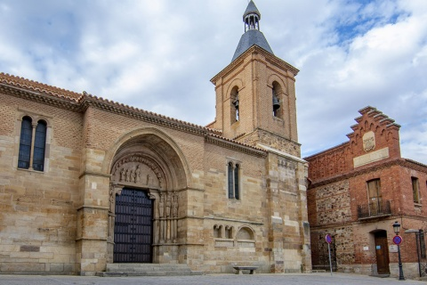

BENAVENTE

Localización
Geografía
Historia
Naturaleza
Cultura y tradiciones
Localización
Benavente es una ciudad y municipio español de la provincia de Zamora, en la comunidad autónoma de Castilla y León.
Geografía
La ciudad se encuentra situada sobre una colina en el centro de una gran llanura, en una zona que se inscribe en la confluencia de dos zonas geográficas diferentes, tanto física como económicamente, como son la Tierra de Campos y la de los valles regados por los ríos Esla, Tera y Órbigo. El municipio tiene una extensión de 45,12 km² y se encuentra situado a una media de 744 metros sobre el nivel del mar según el Instituto Geográfico Nacional. Dista 65 km de Zamora, la capital provincial, y 113 km de Valladolid. En 2020 contaba con una población de 17 787 habitantes
Historia
Posición estratégica
La ciudad de Benavente debe su importancia a su enclave en un lugar privilegiado, cruce de caminos desde la antigüedad hasta hoy día; y unión de los cauces de tres ríos. Está situada al norte de la capital zamorana, a 62 km de distancia de esta y domina desde lo alto la confluencia de los ríos Órbigo y Esla y un poco más abajo se les une el Tera. Esto hace que Benavente esté rodeado de una extensa y rica vega. La posición estratégica donde se encuentra asentada la ciudad es envidiable, ya en tiempos muy remotos atrajo a diferentes pueblos que se asentaron por esta zona.
Desde los astures hasta 1164
Se conoce que antes de los inicios de nuestra Era, la comarca tenía ya entidad definida porque estaba habitada por la tribu astur de los brigecienses, cuyo centro, Brigaecium ("Dehesa de Morales" (Fuentes de Ropel), aparece en diversas fuentes romanas, como Ptolomeo, el Itinerario Antonino y Ravennate. Floro (Flor. Epit. 2.33.55) destaca su papel decisivo en las Guerras Cántabro-astures, cuando, traicionando a los Astures, descubre las disposiciones de éstos contra Roma en el momento final de la contienda, en el año 19 a.e.
La llegada de Roma y la división territorial augustea posterior a la conquista la sitúan en el Conventus Iuridicus Asturum (con capital en Asturica Augusta), núcleo del que sigue dependiendo en época visigoda.
Desde el dominio de los Suevos se le conocía con el nombre de Ventosa, hasta que en el siglo XII la villa toma el nombre de Malgrat. Este último nombre aparece en el que se considera el primer testimonio escrito que se refiere a Benavente y que se menciona en una donación real, fechada en 1115, que hace la reina Urraca de la mitad de la villa de Caneda a la iglesia de Compostela, escriturada "in Castro quod dicitur Malgrado". Una denominación equivalente encontramos en otro diploma de 1158, en el que se menciona la intención de Fernando II de poblar el alcázar de "Maldrag". Desde este último documento, la villa aparece ya vinculada al proceso de repoblación del territorio emprendido por los monarcas leoneses, en este caso, de la mano de Fernando II de León que en 1164 le concedió un fuero que tres años más tarde fue renovado y ampliado. Este monarca reunió cortes en la fortaleza de la villa, repobló de gente el terreno e incluso llegó a morir aquí.
Desde 1164 hasta los Reyes Católicos
Tras la muerte de Fernando II de León, Alfonso IX y Alfonso X siguieron ayudando al crecimiento de Benavente por medio de privilegios y mercedes. Al morir Alfonso IX de León la villa será escenario de la unión definitiva de las Coronas de León y de Castilla en la Concordia de Benavente, cayendo después en decadencia hasta que Sancho IV fomentó su engrandecimiento en 1285 atrayendo con franquicias a nuevos pobladores.
En 1352 Don Fadique, hermano del rey Pedro I, recibió la villa a cambio de no atacar a Pedro. En 1387 Benavente sufrió el cerco por las tropas inglesas y portuguesas del duque de Lancaster que intentaron asediarla, saliendo vencidos los asediantes en tal intento.
A continuación de estos hechos, Benavente se convirtió en cabeza de un extenso dominio. Los dominios se fueron extendiendo de tal manera que no solo había poder sobre suelo benaventano, sino que había poder en el resto de León, en Castilla e incluso hasta en Galicia.
El 17 de mayo de 1398 el rey Enrique III fundó el Condado de Benavente (posteriormente elevado a Ducado por Enrique IV el 28 de enero de 1473), que le fue otorgado como titular a Juan Alonso Pimentel, que también llegó a ser Adelantado Mayor del Reino de León y Comendador de Castrotorafe de la Orden de Santiago. Este sería tronco de una gran dinastía nobiliaria a lo largo de la historia y hasta finales del siglo XIX: los Pimenteles, que tuvieron como primer duque de Benavente a Rodrigo Afonso Pimentel.
Reyes Católicos hasta el siglo XIX
Cuadro atribuido al pintor flamenco Jacob van Laethem del séquito de Felipe el Hermoso, titulado Corrida de toros en Benavente en honor de Felipe el Hermoso, realizado en 1506.
Hasta la llegada de los Reyes Católicos se suceden conflictos entre los nobles y la realeza, que hacen que la ciudad sufra sitios en apoyo de uno u otro monarca. Durante este reinado de los Reyes Católicos los benaventanos formaron parte de la famosa batalla de Toro. En el reinado de Doña Juana y Felipe el Hermoso, Benavente fue la primera ciudad que visitaron, recibiendo en el palacio a los procuradores para nuevas Cortes.
Con la llegada de los Austrias, algunos miembros de la familia Pimentel llegarían a ser virreyes en ultramar y Nápoles. Así, a inicios del siglo XVI Carlos I de España, ya nombrado emperador de Alemania con el nombre de Carlos V, celebró un consejo en el castillo-palacio de los condes, mientras que en 1554 la villa y su alcázar se engalanaron para recibir al entonces príncipe Felipe y al infante Don Carlos.
Cabe señalar que durante toda la Edad Moderna, Benavente fue la cabeza de la provincia de las Tierras del Conde de Benavente, encabezando asimismo dentro de esta una de las dos receptorías que integraban dicha provincia (la otra era la de Sanabria).
Hay que destacar en aquella época el papel evangelizador que llevó a cabo el fraile benaventano Fray Toribio de Benavente o de Motolinía entre la población indígena de México y Centroamérica. En el siglo XVII, Benavente, sufrió una fuerte crisis económica, bajas en la población por causa del hambre, epidemias; pero gracias al abrigo de la ilustración se paliaron las hambres y enfermedades que rondaban la ciudad mediante la creación de importantes obras públicas. Se crea así la Sociedad Económica de Benavente, semejante a las tituladas de “Amigos del País” que se crearon en España en aquella época.
Napoleón en Benavente
El Emperador, persiguiendo al inglés, que había destruido el puente de Castrogonzalo, pernoctó en la casa de Núñez, en la Plaza de los Bueyes (Plaza del Grano) antes de continuar viaje hacia Astorga. Su ejército permaneció en la entonces Villa ocho días. A su salida quemó conventos e iglesias que nunca fueron recuperadas. Las crónicas relatan las consternación del pueblo, que huyó ante la presencia del francés, y lamentan las desgracias y las pérdidas ocasionadas por el ejército invasor. España se había sumido en la guerra de la Independencia desde el 2 de mayo y Benavente también sufrió las consecuencias tras las derrotas españolas en Cabezón de Pisuerga y Medina de Rioseco.
Siglo XIX hasta la actualidad
A principios del siglo XIX, Benavente se ve inmersa en las sacudidas de la guerra de la Independencia; así, en 1808 tuvo lugar en sus inmediaciones una importante batalla denominada Carrera de Benavente entre franceses e ingleses, cayendo prisionero el general Lefevre. La villa y su tierra sufrieron mucho por parte del bando francés; el resultado fue la desaparición de una gran parte de los tesoros artísticos de la ciudad. El palacio fue incendiado y arrasado en parte, la ciudad fue ocupada militarmente utilizando muchos edificios como cuarteles y albergues de las tropas. A esto se unió la Desamortización provocando la desaparición de numerosos conventos
En este siglo y a pesar de estos destrozos, Benavente adquiere importancia a nivel político, convirtiéndose en centro administrativo, judicial y electoral del norte de su entonces provincia de Valladolid, a la que pertenecían de cara al voto en Cortes las tierras del Conde de Benavente, y a la cual también pertenecía la zona de Sanabria. No obstante, al reestructurarse las provincias y crearse las actuales en 1833, Benavente pasó a formar parte de la provincia de Zamora, dentro de la Región Leonesa,10 pasando a ser al año siguiente cabeza del partido judicial de Benavente.11 Benavente toma importancia con todo ello, jugando un destacado papel en el sistema oligárquico imperante en la época de la Restauración, revitalizándose la zona con la creación de obras públicas como el canal del Esla, Ferrocarril Plasencia-Astorga.
En 1929 el rey Alfonso XIII concede a Benavente el título oficial de ciudad. A tal hecho contribuyó de manera decisiva don Serapio González Mato, notario de la villa, quien dirigió al excelentísimo señor ministro de la Gobernación, en súplica de que a Benavente le fuese concedido el título de ciudad.
Naturaleza
En las cercanías a la ciudad podemos encontrar espacios naturales de interés tales como:
Cultura y tradiciones
Cuenta con:
Enlaces a algunas páginas de interes:
